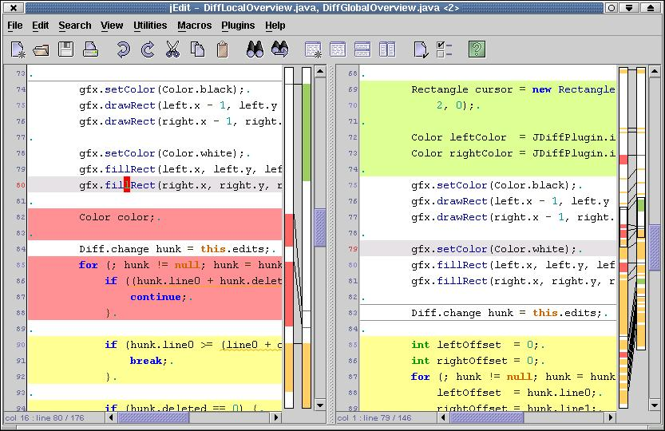

| JDiff Plugin |
By André Kaplan
akaplan@users.sourceforge.net |
JDiffPlugin is a visual diff utility for jEdit.
It features:
- Diff overviews (local and global)
- Synchronized scrolling
- Ignore case/Ignore all whitespace options
It requires:
- Split your view in two (vertically)
Note: JDiff will split your view in two if necessary.
- Edit the buffers you want to compare:
- the buffer on the left is the original
- the buffer on the right is the revision
- Activate JDiff:
Plugins -> JDiff -> Dual Diff
- Figure 1 shows you the result
|  |
| Figure 1 - JDiff Plugin |
Once JDiff is activated as in Figure 1, you should see :
- Text Highlights
- A local overview (right of the original)
- A global overview (right of the revision)
Color conventions
By default:
- Changed lines apppear in yellow
- Deleted (from the original) lines appear in red
- Inserted (to the revision) lines appear in green
- Invalid lines appear as thin dark grey lines.
- In the original, invalid lines indicate where a block was inserted
in the revision.
- In the revision, invalid lines indicate where a block was deleted in
the original.
Local overview
The local overview shows how the visible changed/inserted/deleted blocks
from the original and the revision relate to each other.
Global overview
The global overview should help you estimate how the two edited buffers
differ.
It also displays two cursors which indicate the visible parts of the two
buffers.
- Refresh: refreshes the diff display
- Go to previous/next difference
You can configure how JDiff compares lines. JDiff can:
- Ignore case: upper-cased lines are compared.
- Ignore all whitespace: lines are compared as if
- leading and trailing whitespaces were removed
- repeated whitespaces were replaced by a single space.
You can also configure the color of:
- Changed lines
- Deleted lines
- Inserted lines
- Invalid lines
You can also choose whether:
- the highlighted lines should appear brighter than these colors
- the lines in the overviews should appear darker than these colors
At last, you can choose the color of the left and right cursor in the global
overview.
The preferred way to send bug reports is to use the Bug Tracker at
http://sourceforge.net/bugs/?group_id=588.
Also you can write to:
- André Kaplan <akaplan@users.sourceforge.net>;
- or jEdit-users mailing-list <jedit-users@lists.sourceforge.net>;
- or jEdit-devel mailing.list <jedit-devel@lists.sourceforge.net>.